Messdateneingabe-Fenster
Nachdem der Messstellenplan aufgestellt ist, kann der Bediener die Messdaten im Messdateneingabe-Fenster eingeben.
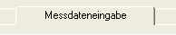
Nachstehend sehen Sie ein Beispiel für das
Messdateneingabe-Fenster vor Eingabe der Daten. Beachten Sie den oberen Bereich
(von der gepunkteten Linie umgeben) des Fensters; hier können Datum und Uhrzeit
für Beginn Eingasung, Beginn Einwirkzeit und Ende Einwirkzeit
über Pull-down-Menüs eingegeben werden. Der Begasungsleiter gibt die
entsprechenden Daten in diesem Fenster und im Begasungsstatus-Fenster ein. Diese
Begriffe werden nachstehend erläutert:
Beginn Eingasung ist der Zeitpunkt, an dem mit dem Einleiten
des Begasungsmittels in ein Gebäude bzw. eine Kammer begonnen wird/wurde.
Beginn Einwirkzeit ist der Zeitpunkt, an dem die
CT-Akkumulation (Dosierung) beginnt. Entspricht in der Regel dem Zeitpunkt, an
dem voraussichtlich eine Gleich-verteilung des Begasungsmittels, belegt durch
Konzentrationsmessungen, erreicht wird.
Ende Einwirkzeit ist der Zeitpunkt, an dem die CT-Akkumulation (Dosierung) endet.
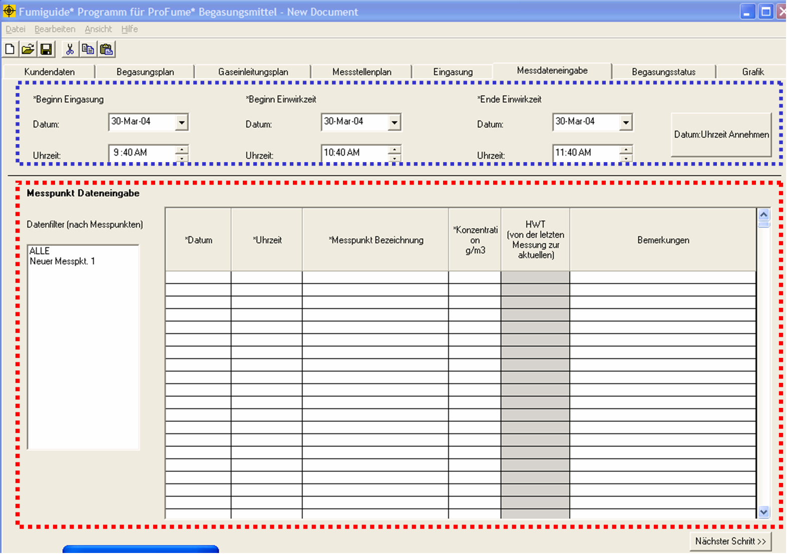
Beachten Sie jetzt den Bereich
Messdateneingabe in diesem Fenster, der mit einer gestrichelten Linie umgeben
ist. Hier werden die Messdaten eingegeben, sortiert nach Messpunkten und HWT
nach Messpunkten.
Das folgende Beispiel für das Messdateneingabe-Fenster zeigt vier Satz
Messdaten für jeden der sechs Messpunkte. Da das Messdateneingabe-Fenster
vollständig mit Daten ausgefüllt ist, kann der Bediener über die Bildlaufleiste
durch die Daten blättern. Beachten Sie, dass in diesem Beispiel alle Daten für
ALLE Messpunkte dargestellt sind.
HINWEIS: Es wird dringend
empfohlen, die Daten während der Eingabe häufig zu speichern.
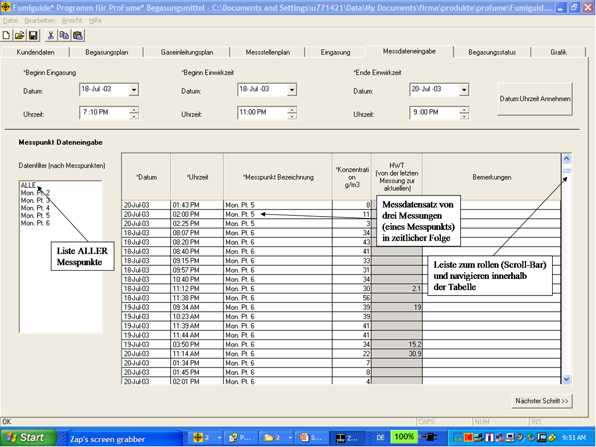
Will der Bediener nur die Daten
für einen einzigen Messpunkt einsehen, so kann er den betreffenden Messpunkt aus
der Datenfilter-Liste auswählen.
Will der Bediener nur die Daten für einige der Messpunkte einsehen, so kann er die betreffenden Messpunkte durch Niederdrücken der „Ctrl“-Taste („Strg“-Taste) auf der Tastatur und Anklicken der gewünschten Messpunkte aus der Datenfilter-Liste auswählen. "Ctrl"-Tasten („Strg“-Tasten) befinden sich auf gängigen Computertastaturen jeweils links und rechts von der Leertaste.
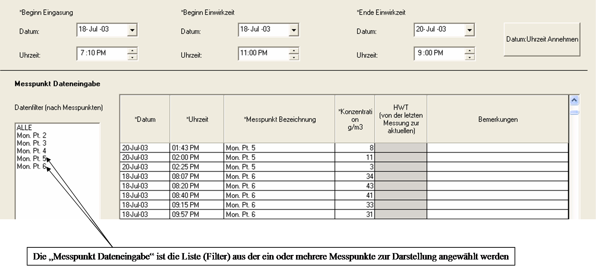
Beachten Sie im folgenden
Beispiel, dass die Messpunkte in alphabetischer Reihenfolge und die Daten
innerhalb der Gruppierungen nach Messpunkten in chronologischer Reihenfolge
angezeigt werden.
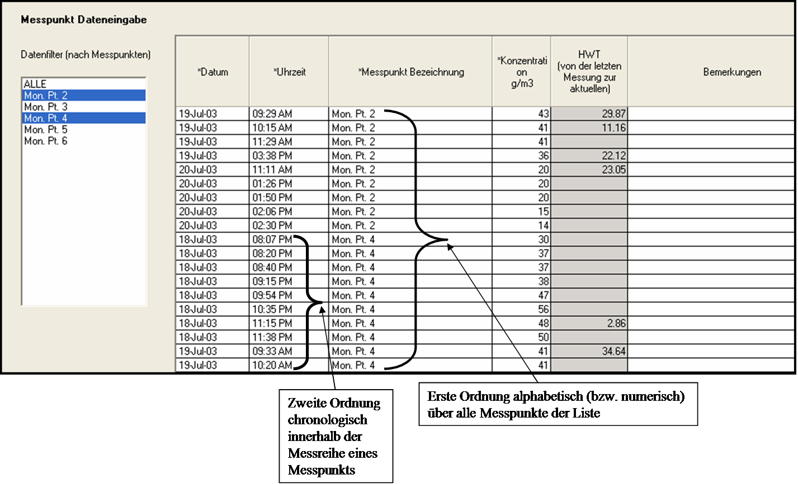
Einzelne oder mehrere
Messleitungen in diesem Fenster können durch Auswählen der jeweiligen Leitungen
(die dabei blau unterlegt werden) kopiert und an anderer Stelle innerhalb der
Tabelle eingefügt werden. Klicken Sie anschließend mit der rechten Maustaste und
wählen Sie Kopieren. Bewegen Sie die Pfeiltasten zu einer offenen Zeile
oder wählen Sie einen Messpunkt über den Datenfilter; anschließend klicken Sie
erneut mit der rechten Maustaste und wählen Einfügen.
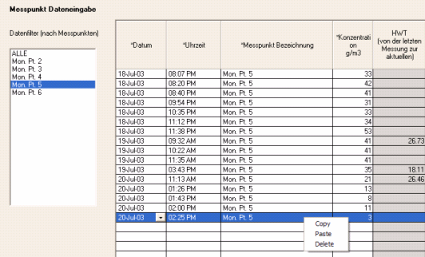
Auf die gleiche Weise können einzelne Messleitungen
gelöscht werden, aber Sie sollten dabei die Funktion Löschen aus dem
durch Klicken mit der rechen Maustaste angezeigten Menü auswählen. Beachten Sie,
dass hierzu auch Tastenkürzel zur Verfügung stehen: Kopieren (Ctrl (Strg) + C),
Einfügen (Ctrl (Strg) + V) und Löschen (Entfernen bzw. Delete). (Die Taste Entfernen
befindet sich auf gängigen Computertastaturen oberhalb der
Rücktaste).
Eine weitere hilfreiche Funktion im Messdateneingabe-Fenster
ist die Möglichkeit, Datumsangaben entweder manuell einzugeben oder aus einem
Kalender auszuwählen, der durch Anklicken des Kalenderpfeils in der Spalte
Datum angezeigt wird.
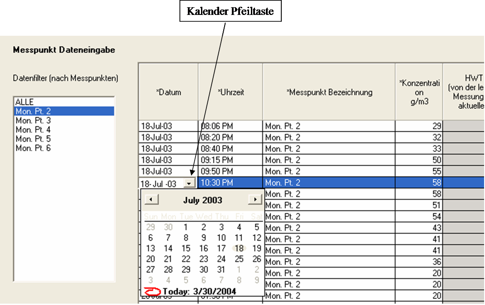
In der Spalte Uhrzeit kann die Uhrzeit, an der die
Messung durchgeführt wurde, durch Doppelklicken auf eine Zelle in dieser Spalte
geändert werden. Der Bediener kann zwischen Stunde und Minute in dieser Spalte hin und her
wandern, wie in den folgenden Beispielen dargestellt. Die
Messpunkte werden in chronologischer Reihenfolge angezeigt.
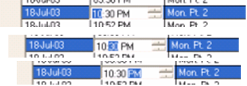
Alle im Messstellenplan-Fenster eingerichteten Messstellen können über ein Pull-down-Menü im Messdateneingabe-Fenster angezeigt werden. Beachten Sie im folgenden Beispiel auch, dass die HWT erst berechnet wurde, nachdem die Konzentrationsmessungen ihren Höchststand erreicht hatten und bereits wieder rückläufig waren.
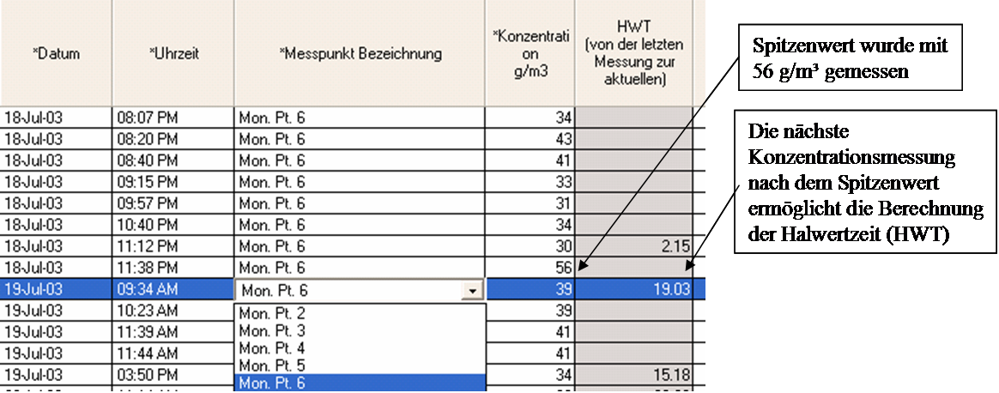
Kurze Notizen zu den Messpunktdaten können in der Spalte
Notizen / Bemerkungen eingegeben werden.
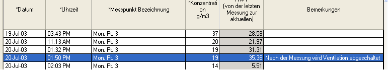
Mit der Eingabe weiterer Messdaten werden laufend
zusätzliche HWT-Berechnungen durchgeführt und angezeigt.
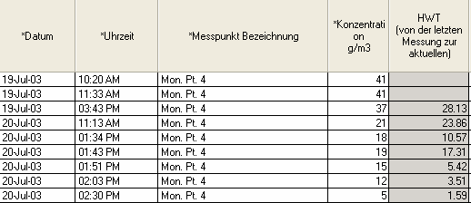
Die HWT für einen Messpunkt wird berechnet, wenn der
Bediener einen anderen Messpunkt aus der Filterdatenliste auswählt oder ein
anderes Programmfenster aufruft.
Warnmeldung im Messdateneingabe-Fenster
Die folgende Meldung wird
angezeigt, wenn der Bediener im Messdateneingabe-Fenster die Schaltfläche
Nächster Schritt anklickt, ohne die benötigten Zeitangaben (Beginn
Eingasung, Beginn Einwirkzeit und Ende Einwirkzeit) eingegeben zu haben.
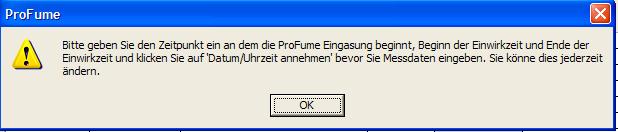
Die folgende Warnmeldung wird beim Entfernen einer Zeile in diesem Fenster angezeigt.
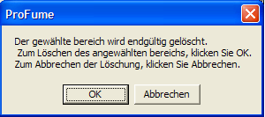
Während der Dateneingabe im
Messdateneingabe-Fenster kann der Bediener zwischen diesem Fenster und dem
Begasungsstatus-Fenster hin- und herwandern, um den Stand des Begasungsvorgangs
nach Bereichen zu kontrollieren.